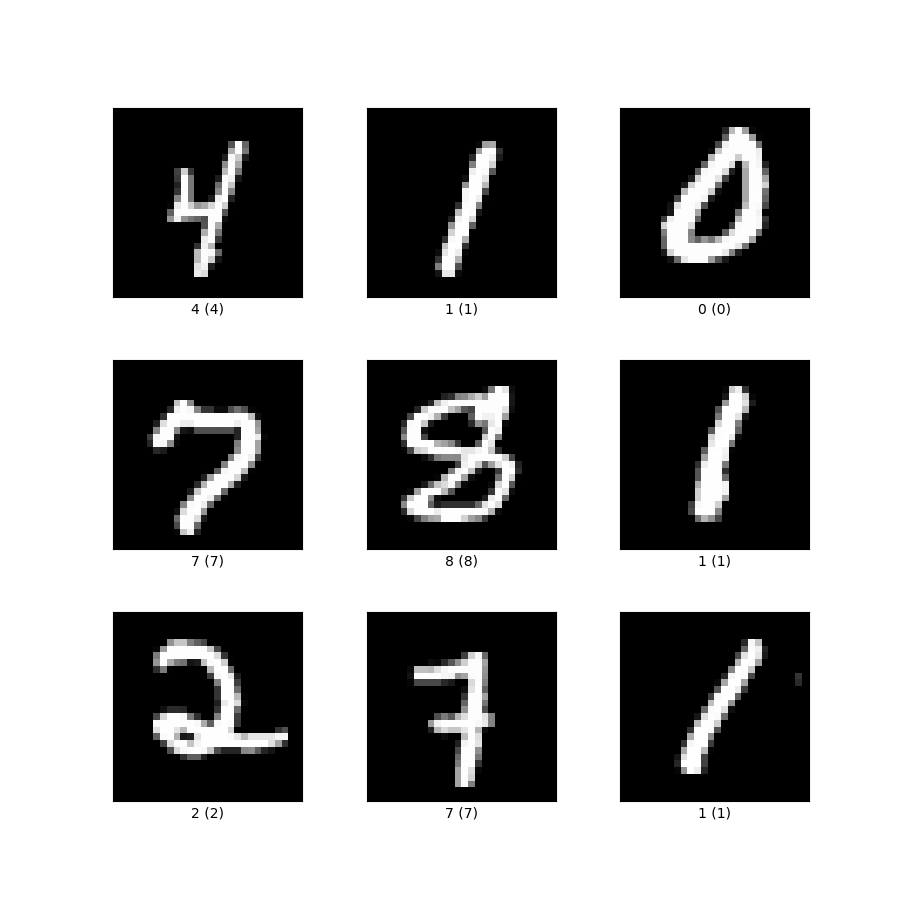

The simplest and most commonly referred-to method of optimization for differentiable cost functions is gradient descent (as discussed in class). It’s worth understanding its behavior on actual problems. In this question, you will implement two of its most important forms: batch gradient descent and stochastic gradient descent (SGD).
Implement a basic gradient descent procedure (a Python function) to minimize a scalar function (y is a scalar) of a vector inputs (x is vector).
Write it generically so that you can easily specify the objective function, gradient function, initial guess, step size, and the convergence criterion (use when the difference in objective function value on two successive steps is below a threshold). For this question, you can use a fixed step size in your implementation.
Provide code in the homework.
def gd_function(obj, grad, init_guess, step_size, epsilon, max_iter=100):
"""
Gradient Descent Function to minimize an objective function.
Parameters:
- obj: Objective function to minimize (must take a vector
as input and return a scalar).
- grad: Gradient function of the objective function
(returns a vector of gradients).
- init_guess: Initial guess for the parameters (a vector).
- step_size: The step size (learning rate) for the gradient descent updates.
- epsilon: The stopping criterion (the algorithm stops
when the difference in objective function value on two
successive steps is below a threshold).
- max_iter: Maximum number of iterations to prevent infinite loops.
Returns:
- opt_point: The vector of parameters that minimize the objective function.
"""
# your code here ....
return opt_point
Test your gradient descent procedure on two functions: the negative of a Gaussian function and a quadratic bowl. You need to at least finish the following tasks:
Discuss (and illustrate) the effect of the choice of starting guess, the step size, and the convergence criterion on the resulting solution.
How the norm of the gradient evolves through the iteration.
Plot how the algorithm iteratively finds the optimal point.
Its derivative can be written as:
The parameters are:
being a positive definite matrix:
Its derivative can be written as:
The parameters are:
The gradient function may not always look as simple and clean as the ones provided above. A common way to use the central difference approximation to numerically evaluate the gradient at various points.
https://en.wikipedia.org/wiki/Finite_difference
The equation for the partial derivative with respect to the $i$-th parameter is given by:
where is a basis vector (all zeros except for a 1 at the i-th position) and is a small scalar value.
Only need to use the negative Gaussian function as the target in Q3 problem.
You need to at least finish the following tasks:
Write code to approximate the gradient of a function numerically at a given point using this method.
Compare the gradient values on the functions you used in the question above by comparing the analytical and numerical gradients at various points.
Use numerical gradient to do gradient descent to find the minimal point of the negative Gaussian function.
In machine learning, batch gradient descent uses samples from the full training set for each parameter update. Thus, each iteration would be slow for a large dataset. In addition, the native form of batch gradient descent does not provide a way to incorporate new data efficiently.
Stochastic gradient descent (SGD) addresses these problems by using stochastic approximation on the gradient term (as discussed in class). In this question, we will use both batch gradient descent and SGD on a least square fitting problem.
The dataset is provided in fittingdatap.x.txt and fittingdatap.y.txt. Each row of and represents a single data sample pair .
Your goal is to find a coefficient vector that minimizes the least square error:
Use SGD to perform a parameter update based on a single training example:
where is the learning rate for each iteration and is the objective function in terms of a single data sample.
Use batch gradient descent on with a fixed step size. This would be the case where the gradient of the cost function for the entire training dataset is used in each parameter update.
Write a general procedure that performs SGD on this dataset. You should first derive the point-wise (with respect to a single data sample) gradient function, . Then write a procedure to perform parameter update by iterating through the samples in the dataset for some number of rounds until a stopping criterion is reached (here use the convergence of the full objective function over all data points is reached, just like the batch gradient descent).
Tip: In order to have a guaranteed convergence for SGD, the learning rate for can be chosen to satisfy the Theorem 2 as shown in class. An example of this is to choose for constants and .
# Stochastic Gradient Descent (SGD)
def sgd_function(obj, grad, data, init_guess, step_size, epsilon, max_epoch=100):
"""
Stochastic Gradient Descent (SGD) Function to minimize an objective function.
Parameters:
- obj: Objective function to minimize (evaluates over the full dataset).
- grad: Point-wise gradient function of the objective function.
- data: Dataset used for stochastic updates, typically a tuple (X, y).
- init_guess: Initial guess for the parameters (a vector).
- step_size: A function that calculates the learning rate for a given iteration t.
- epsilon: The stopping criterion (e.g., convergence of the full objective function).
- max_epoch: Maximum number of epochs (passes over the entire dataset) to prevent infinite loops.
Returns:
- opt_point: The vector of parameters that minimize the objective function.
"""
# your code here ....
return opt_point
Plot the full objective function vs. iteration number for both batch and stochastic gradient descent methods. Compare the behavior of the two implementations in terms of accuracy and number of evaluations of the point-wise gradient.
You may notice that SGD does not strictly descent at every iteration and may have large "jumps". An in-between method is the mini-batch gradient descent, which uses a subset of training samples for parameter update in a stochastic setting and can smooth out these large "jumps".
Construct a mini-batch gradient descent function. Please note that you can specify how many data points (n) used in a mini-batch (when , it is SGD).
Does the convergence become "smoother" as you would expect compared to the case of SGD?
# Mini-batch Gradient Descent
def minibatch_gd_function(obj, grad, data, init_guess, step_size, epsilon, n_batch=32, max_epoch=100):
"""
Mini-batch Gradient Descent Function to minimize an objective function.
Parameters:
- obj: Objective function to minimize (evaluates over the full dataset).
- grad: Gradient function of the objective function (evaluates over a mini-batch).
- data: Dataset used for stochastic updates, typically a tuple (X, y).
- init_guess: Initial guess for the parameters (a vector).
- step_size: A function that calculates the learning rate for a given iteration t.
- epsilon: The stopping criterion (e.g., convergence of the full objective function).
- n_batch: The size of each mini-batch.
- max_epoch: Maximum number of epochs (passes over the entire dataset) to prevent infinite loops.
Returns:
- opt_point: The vector of parameters that minimize the objective function.
"""
# your code here ....
return opt_point
In this problem, we will apply neural network to automatically classify images of hand-written digits from the famous MNIST dataset (https://en.wikipedia.org/wiki/MNIST_database).
The MNIST dataset is provided as a CSV file. Each line in CSV is one data point. The first number is the digit label (e.g., 1, 2, 3 ...), and the next 784 numbers are pixel grayscale levels (0, 255) for 28*28 image. In the 784 numbers, the first 28 columns (1-28) represent the first row of the image, the second 28 columns (29-56) represent the second row of the image, and so on. The digits look like the following:

Even though the image is 2828, you can just use the flat 784-dimension vector as the input. The model will learn the relationship among the flat vector input to understand which number it is. The more advanced way of processing image type input is convolutional neural network, which considers the image as a 2828 data type input. However, this is out of the scope of this course.
If you are interested in convolutional neural network, you can refer to https://en.wikipedia.org/wiki/Convolutional_neural_network.
You can use the "HW2_background_code.ipynb" code to read the CSV file, prepare training data, plot one image, some basis for loss and activation function. Read the supplied code very carefully before you start.
Note:
取决于你的电脑配置，如果配置比较好，可以多用点训练数据，我们在数据准备函数里面有data_use_ratio，如果电脑比较差或者想先跑跑代码是否有错，可以用一个小一些数字。但一般来说笔记本跑1万个数据没有问题，效果也还行。 prepare_binary_data(csv_file, target_labels, train_ratio=0.8, data_use_ratio=1.0) prepare_multi_data(csv_file, train_ratio=0.8, data_use_ratio=1.0)
Though MNIST is often used for multi-class classification, we will first look at binary classification of different subsets of digits to differentiate two digits. Let's go through some details before actually solving this problem.
For binary classification problem, we need to use sigmoid activation function for the last layer of the model.
The loss function is binary cross-entropy loss, or called negative log likelihood (NLL):
Recall that when we do back-propagation, we need to use chain-rule like following to calculate the gradient for each layer sequentially.
However, as you will probably see (try it), it is not very clean to calculate the . It is even worse for cross-entropy loss for softmax activation since you will get a matrix of gradients. It would be easier to directly calculate directly.
Derive the derivative equations for and . (写出推导步骤) Show that for the last sigmoid output layer.
If you use this equation for gradient backward propagation, please be careful with your last layer. Previously, we are using the following code to calculate :
Show that for the last sigmoid output layer. If you use this equation for gradient backward propagation, please be careful with your last layer. Previously, we are using the following code to calculate :
dZ = dA_out * self.activation_deriv(self.Z) # shape (N, output_dim)
Now, it is different:
dZ = y_pred - y_true # shape (N, output_dim)
So, you need to specially handle this for the last layer.
Note: You can certainly use the original way to calculate and . But, you have to use dZ = y_pred - y_true in this task since the next Q2 softmax multi-class classification also needs to use this otherwise the for softmax is too complicated.
You can consider using the following strategy:
class FullyConnectedLayer:
def __init__(self, input_dim, output_dim, activation='relu', dim_output=False):
# ...
def forward(self, A_in):
# ...
return self.A_out
def backward(self, dA_out, y_true=None, is_output_layer=False):
# ....
if is_output_layer and (self.activation == sigmoid or self.activation == softmax):
# dZ = ....
else:
# dZ = ....
# .....
return dA_in, dW, db
def print_dims(self, label, *args):
# ...
class NeuralNetwork:
def __init__(self, layers_config):
# ....
def forward(self, X):
# ...
return A # final output
def backward(self, dA, y_true):
for i, layer in reversed(list(enumerate(self.layers))):
if i == len(self.layers) - 1: # Output layer
dA, dW, db = layer.backward(dA_out=None, y_true=y_true, is_output_layer=True)
else: # Hidden layers
dA, dW, db = layer.backward(dA_out=dA)
grads.append((dW, db))
# grads are collected in reverse order
grads.reverse()
return grads
def update_params(self, grads, lr=0.001):
# ...
Try (at least) the following pairwise classification tasks: 1 vs 7, 3 vs 5, 4 vs 9. You can certainly try other combinations.
Please include the following discussions in your homework:
Report how model structure affects the training speed, prediction accuracy.
Draw some examples of correct and incorrect predictions. Discuss why are wrong correct or wrong.
Additional tips:
Refer to the demo code to solve this problem (you should find all pieces of codes for constructing the required neural network).
You can start with the neural network structure with the following configurations: layers_config = [(784, 128, 'relu'), (128, 64, 'relu'), (64, 1, 'sigmoid')] learning_rate = 0.001, epoch = 100 Then, you modify the model to see how the performance changes
Now, you will extend the binary classification approach to classify all 10 digits (0-9) using a neural network. Instead of using a sigmoid activation function for binary classification, the final layer must now use the softmax activation function, which is commonly used for multi-class classification problems.
The softmax function is defined as:
where is the score for class , and is the total number of classes (10 in this case).
You will need to derive the gradient of the cross-entropy loss function with respect to the softmax input. The cross-entropy loss for a multi-class classification problem is:
where is the one-hot encoded true label and is the predicted probability for class .
Similar to sigmoid and binary cross-entropy loss above, we don't need to compute , instead we can directly calculate (You don't need derive this in this question.
Modify your previous binary classification model by:
Changing the final layer activation from sigmoid to softmax.
Updating the loss function to cross-entropy loss.
You may start with the following model configuration and later experiment with different structures:
layers_config = [
(784, 128, 'relu'),
(128, 64, 'relu'),
(64, 10, 'softmax')
]
learning_rate = 0.001
epochs = 100
The final layer now has 10 output units, corresponding to the 10 possible digit classes.
Discuss how model and training parameters (e.g., epoch, learning rate, model configurations) will affect the prediction accuracy.
Note: 这个任务跑通工作量比较大，能跑通就很不错。
After we trained the neural network, we want to save the optimized weights for later use, such that we don't have to train the neural network.
Use the following code as a reference. Try it yourself to achieve it.
import pickle
class NeuralNetwork:
def __init__(self, layers_config):
# ...
def forward(self, X):
# ...
def backward(self, dA, y_true):
# ...
def update_params(self, grads, lr=0.001):
# ...
def save_model(self, file_path):
"""
Saves the neural network's weights and biases to a file.
"""
model_data = {
"layers_config": [(layer.W.shape[0], layer.W.shape[1], layer.activation.__name__) for layer in self.layers],
"weights": [layer.W for layer in self.layers],
"biases": [layer.b for layer in self.layers]
}
with open(file_path, 'wb') as f:
pickle.dump(model_data, f)
print(f"Model saved to {file_path}")
# 这decorator很重要，记得加上就好，具体原因可以自行学习：
# https://www.geeksforgeeks.org/class-method-vs-static-method-python/
# 即你无需创建这类class的object，就可以直接调用这个func，如下面load_model所示
@staticmethod
def load_model(file_path):
"""
Loads a saved neural network model from a file.
"""
with open(file_path, 'rb') as f:
model_data = pickle.load(f)
nn = NeuralNetwork(model_data["layers_config"])
for layer, W, b in zip(nn.layers, model_data["weights"], model_data["biases"]):
layer.W = W
layer.b = b
print(f"Model loaded from {file_path}")
return nn
Save the trained model:
nn.save_model("trained_model.pkl")
Load the trained model:
loaded_nn = NeuralNetwork.load_model("trained_model.pkl")
trained_model.pkl 就是你训练好的weights信息